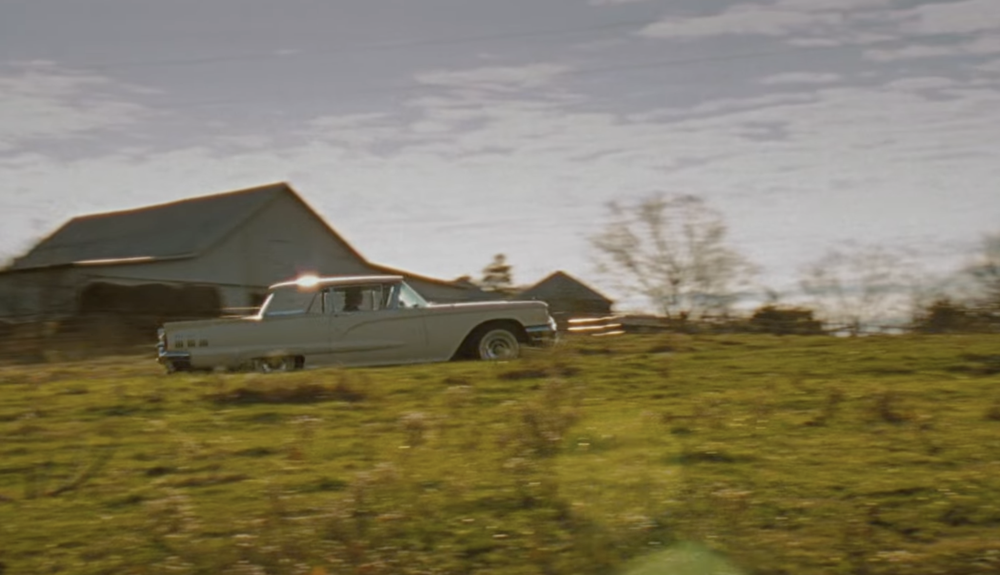
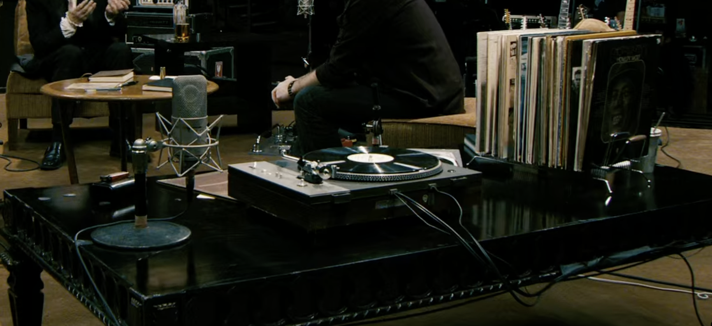
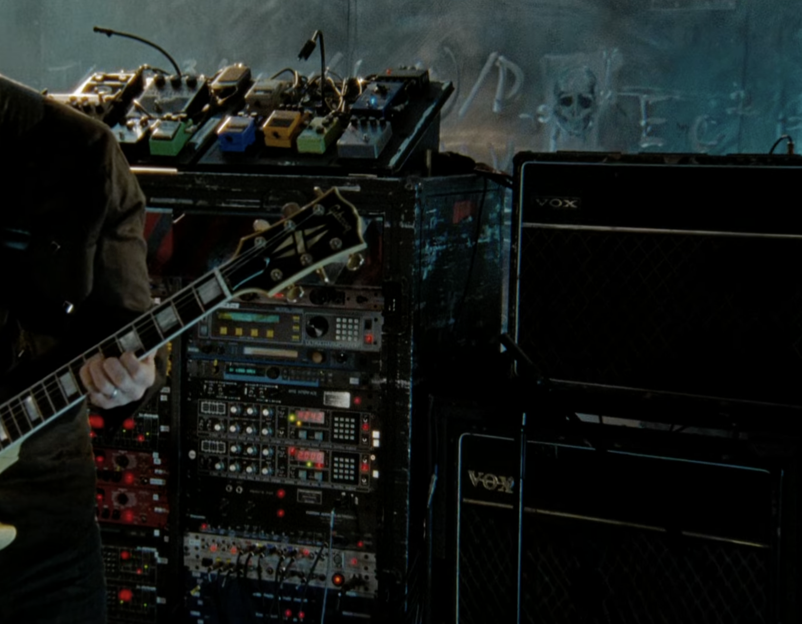

Mehr als eine Dokumentation über die E-Gitarre
Ich verstehe so viel von Musik, dass ich die neuesten Beefs aus der amerikanischen Pop-Rap-Rzene zusammenfassen,
ziemlich viele Musikvideos und -lyrics aus den Billboardcharts der 00er Jahre auswendig kann und die Lore
um Pop-Band-Zusammenbrüche einigermaßen erinner.
Aber immer hat mich die Leidenschaft der Fans beeindruckt, die sich den ganz großen Bands verschrieben hatten.
Es gab diesen einen Olymp der Musikwelt, in dem die Giganten des Rock thronten: ACDC, Led Zeppelin, U2, und
wie sie alle heißen. Ich bin so ein Stümper, dass ich da auch Queen, die Rolling Stones und was weiß ich mit
reinwerfe. Vielleicht haben die aber auch ihren eigenen Olymp, ich weiß nicht. Die Welt der bunten, meistens
unglücklichen Menschen, die Schlagzeug und Gitarre spielen, in Ekstase über die Bühne springen und die Massen
elektrifizieren; richtige Instrumente, Live Musik, Band-Drama. Für mich war das immer die Bio-Musik, und ihre
Fans die Veganer erster Stunde, auf ihrer Mission, der Welt zu erklären, dass es keine Alternative gebe und
man eh alles falsch mache, wenn man die nicht gut findet. Ich habe mich unwürdig gefühlt. Keine Aussicht darauf,
mitreden zu können. Aber ich hatte auch einfach keine Ahnung und die Einladungen zu dem Thema klangen in
meinen Ohren immer wie zuschnappende Türen.
Ich bin auch gar nicht bereit, mein Wissen systematisch zu erweitern. Vielmehr freue ich mich, wenn ich hier
und dort einen Finger in die Ästhetik und Geschichte dieser wundervollen Szene tauchen darf.
Das ist meine einzige Mission. Ein bisschen was von allem lernen.
Auf diesem Blog will ich ein Ort im Internet sein, der Dinge ausgräbt und nochmal sichtbar macht.
Es ist schon so viel geiles Zeug produziert worden, über das wir nochmal sprechen sollten.
Die 2008 gedrehte und erschienene It Might Get Loud Doku. Produziert und geleitet von Davis Guggenheim.
Ich liebe Dokus und diese ist ein Vibe. Schon in den ersten 10 Minuten wird Yoga gemacht. Mit einem Blackberry
Inder Hand. Richtig 2008.
Ich kenne Led Zeppelin von Tshirt Prints, U2 von einem Apple Update von vor über zehn Jahren und von den White Stripes hat es mal ein Song auf meine Playlsit geschafft. Aber ich hatte bisher keine Ahnung wer Jimmy Page, The Edge oder Jack White sein sollten. Mit diesem neuen Wissne habe ich das Gefühl, etwas näher am Tisch der coolen Kids sitzen zu dürfen.
It Might Get Loud : Eine Dokumentation über die E-Guitarre. Allein der Titel ist schon stark. Sie laden drei Gitarristen ein, die aus drei verschiedenen Generationen stammen und in den legendärsten Bands der Rock Szene gespielt haben.
Das gemeinsame Gespräch und Musizieren der drei wird unterbrochen von Szenen aus ihrer Vergangenheit und Interviews aus ihren Heimatorten.
Page ist der Älteste (1944). Seine Karriere nimmt schon in den 60ern Schwung auf. Evans findet seine erste Gitarre in dem neuen Haus, in das seine Familie zieht. Er verbringt fast sein ganzes Leben in Irland. Es ist ein Irland, das von täglichen Bombenanschlägen, Mord und Totschlag erschüttert wird. Es macht ihn politisch. Sunday Bloody Sunday. White ist buchstäblich einer der letzten Whiteboys in South Chicago. Ein Instrument zu spielen, ist das letzte, womit er sich in einer aufkommenden Kultur des Hip Hop und DJing auszeichnen kann. Der zweite Teil der White Stripes ist seine talentierte große Schwester am Schlagzeug. Die White Stripes haben mich bisher überhaupt nicht interessiert, aber von dieser coolen Band-Konstellation zu erfahren, ärgert mich. Es ärgert mich irgendwie, dass ich an so einem coolen Fact vorbeigekommen bin, ohne davon Kenntnis zu nehmen.
Der Freund, der mir die Doku empfohlen hat, beschrieb die Eingangsszene, in der Jack White mit einem Holzbrett, zwei Nägeln, etwas Draht und einem Verstärker eine Konstruktion baut. Er haut in die gespannten Saiten und ein elektrischer Sound ist zu hören. „Who said you need a guitar?“, grinst er. Er sieht aus wie Johnny Depp in seiner Rolle als Sweeny Todd. Etwas blass, etwas ungesund, aber mit Stil. Mit seinem ganz persönlichen Stil, der noch nicht aus einer Social Media Schablone kommt. Die Optik rückt in den Hintergrund als diese Koryphäen ihres Fachs anfangen, das Instrument ihres Lebenswerks zu erklären und gemeinsam zu musizieren. Gleich höre man die lang gestreckten Töne und zum Ende die Wellen, die den Ton strecken, erklärt Jimmy Page, während ein Gitarren-Solo abgespielt wird. Er begleitet die Aufnahme mit Luftgitarre-Bewegungen und ich freue mich, weil ich genau hören kann, was er gerade erklärt hat.
Ich liebe es, wenn Menschen über ihre Leidenschaften sprechen. Über Leidenschaften, nicht zweckgebundene Erfolge. Ich genieße es, wenn Menschen mir ihre Kunst erklären, auch wenn ich absolut nichts davon verstehe. Wenn ich danach auch nur ein Gitarrensolo mit einer zusätzlichen Ebene des Erkennens hören kann, dann ist meine Welt ein bisschen größer und tiefer geworden.
Ich schaue mir David Howell Evans aka The Edge und frage mich, ob er da richtig ist. Er entspricht gar nicht meinem Bild eines Rockmusikers. Mit seiner engen Mütze auf dem Kopf erwarte ich eher, dass er mir gleich einen Breakdance Move zeigt. Aber er hat es drauf, wie mir die Ausschnitte aus seiner Karriere zeigen. Da ich sie alle während der Doku googeln muss, habe ich gelernt, dass er im Juni diesen Jahres endlich die Irische Staatsbürgerschaft angenommen hat.

Wenn ich schon von Evans verwirrt war, dann ist es Jimmy Page, der mich am meisten fasziniert. Und ich kann ganz genau sagen, was es ist: Seine Eleganz. Er trägt Sakkos, die ihm passen, mit Nähten und Schnitten, die von Qualität zeugen. Es sind besondere Schnitte, Muster und offensichtlich hochwertige Materialien. In stimmiger Kombination mit seinem silbernen Haar könnte er sich auch vor ein Symphonie-Orchester stellen und überzeugen. Die Rückblicke auf sein Leben zeigen, dass die Vorliebe für besondere Sakkos schon länger besteht und auch noch aus einer anderen Zeit geprägt ist. Dann verrät Jimmy Page, dass er über die Musik hinaus mit den schönen Künsten allgemein geliebäugelt hat, dass er lernen wollte zu zeichnen und zu malen. Das erklärt für mich sein ästhetisches Empfingen, das sich in seinem Stil widerspiegelt.
Die Musik ihrerseits zieht die visuellen Künste immer an. Dieser Film, der diese drei Musiker zusammenbringt, ist ein Kunstwerk für sich. Das Colorgrading ist Blockbuster-mäßig, die Kameraführung dynamisch und die Schnitte sitzen perfekt zum Beat der Musik. Mir kann keiner sagen, dass der Kameraman und die Postproduktion nicht ausgerastet ist, als das Licht in einer perfekten Linie über die Karrosserie des Oldtimers gleitet.
Schaut euch diese Kameraeinstellung an! Sie sehen aus wie Bosse, zu denen niemand mehr ehrlich ist.


Man merkt, wieviel Spaß die Crew an der Produktion hatte. Die Liebe zum Detail wird in jeder Szene deutlich. Hier zum Beispiel zoomt die Kamera von Jacks Lederschuh heraus. Als Jack beginnt, mit dem Fuß auf den Boden zu stampfen, bebt die Kamera auf dem Stativ. Das Bild ruckelt im Takt mit.

Der gesamte Film ist ein Fest für Fans der analogen Technologie und Retro-Ästhetik.
 
Bevor der Abspann kommt, will ich wissen, wer Davis Guggenheim ist, was er noch so gemacht hat. Ich muss schmunzeln: die Al Gore Doku. Ich glaube, jeder in meiner Generation kennt diese Dokumentation über den Versuche des damaligen Präsidentschaftskanditaten auf die größte Katastrophe des 21. Jahrhunderts hinzuweisen. Er hat gegen jemanden verloren, der gleich drei Kriege angefangen hat. Ah, und die Malala Doku. Die hat auch einen bleibenden Eindruck hinterlassen. Vielleicht schaue ich mir noch andere Werke von Davis Guggenheim an. Es hat sich bisher immer gelohnt.
🤘
Spinelli